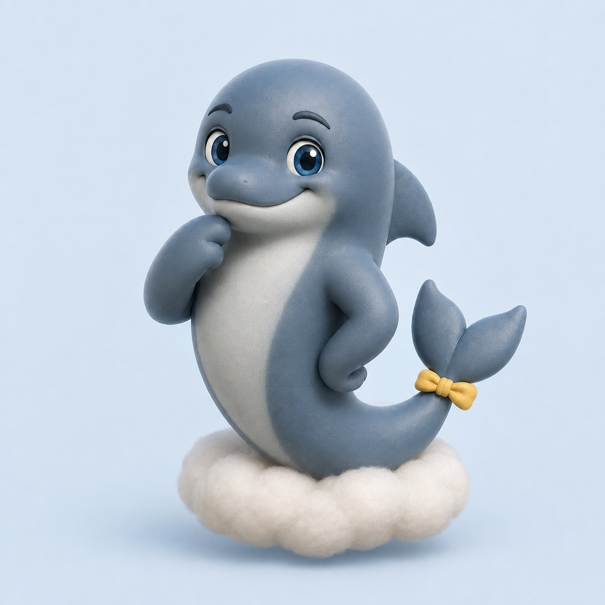

ドルタルは、港の荷物を整理するのが得意です。何から手をつけようか迷っている人と、ひとつずつ、できることを探します。
けれど、イルカのドルタルは陸を歩けません。港を移動するときは、下腹部から胴体をスリーモの雲に預けます。雲は体にぴたりと接し、そっと支えてくれます。
誰かを助ける人が、誰にも頼らなくていいわけではありません。ドルタルがこの港で過ごせるのも、ひとりの力ではないのです。
「今日は、どちらへ行く？」
スリーモが聞くと、ドルタルは少し考えました。
「少しだけ、海を見に」
急いで答えを出さなくてもいい午後でした。
おしまい。
ほかのおはなしを読む